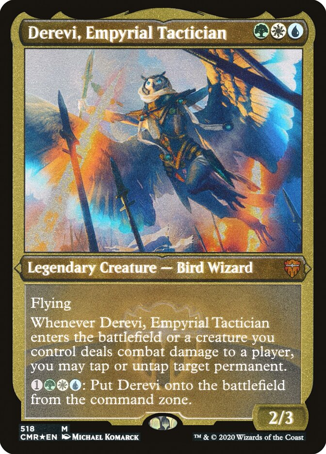

I was born in Michigan, but I have lived mostly in Connecticut and Boston while spending a brief amount of time in China. I also lived in Pennsylvania temporarily because of boarding school
| Place | Time period lived there |
|---|---|
| Ann Arbor, Mi | 2000-2007 |
| Stonington, CT | 2007-2012 |
| Shanghai, China | 2012-2015 |
| Pottstown, PA | 2015-2019 |
| North Quincy, MA | 2019-Present |
Some of the things I like to do outside of classes involve reading and writing. I'll put a list of some books that I've recently that I feel like need highligthing
Another hobby that I picked up recently was playing trading card games, specifically Magic: The gathering. I really like the strategic element and the wide variety of cards which allowed me to find my playstyle
Here is my favorite card! You can click the image to see more details about it!
Lastly, I've always been pretty interested in gaming. It's a little nerdy, but I actually made a montage last year, you can find it here. It's nothing that impressive, but I'm proud of it nonetheless.
Here is a list of some of my favorite games
That was a little bit about me! Obviously I didn't cover every little detail so if you want to talk more, I'm always happy to talk about whatever you want!